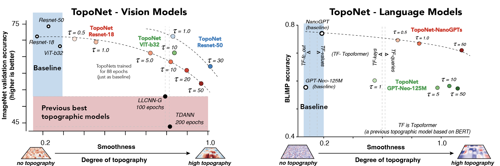
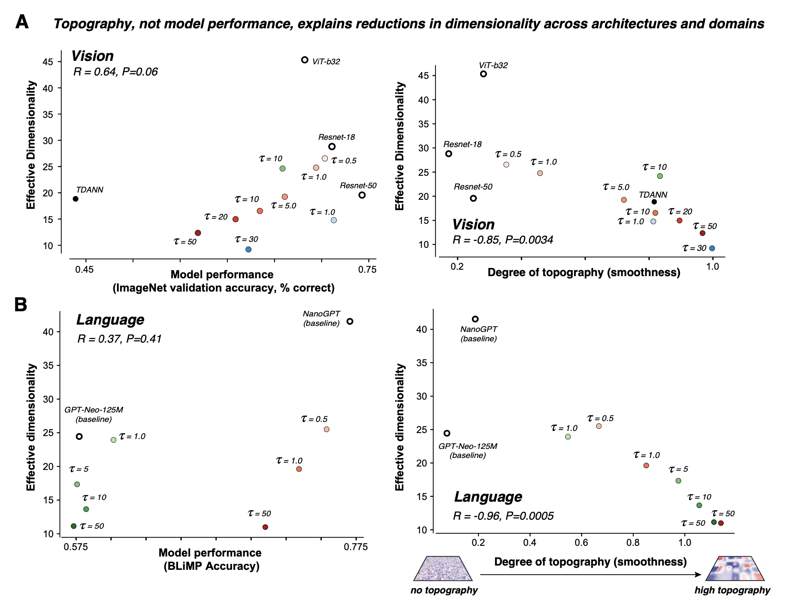
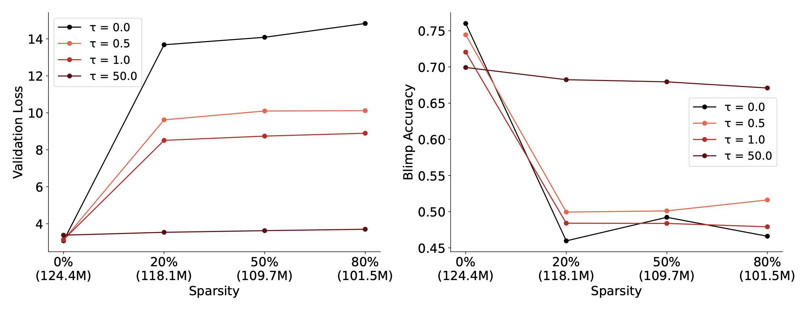

The organization of neurons in the brain is highly structured: neurons performing similar functions are located near one another. This "topographic organization" is a fundamental principle of primate brains and plays an important role in shaping the brain's representations.
Here we introduce TopoLoss, a simple, scalable, and effective method for inducing brain-like topography into leading AI architectures (convolutional networks and transformers) with minimal drop in model performance. The resulting models, TopoNets, are the highest-performing supervised topographic neural networks to date.
Visualizing the orientation selectivity of the first layer of an MLP trained with TopoLoss on MNIST.
GPT-Neo-125M when trained with TopoLoss show emergence of category-selective regions
TopoLoss is easy to install and use!
pip install topoloss
Usage:
import torchvision.models as models
from topoloss import TopoLoss, LaplacianPyramid
model = models.resnet18(weights = "DEFAULT")
topo_loss = TopoLoss(
losses = [
LaplacianPyramid.from_layer(
model=model,
layer = model.fc, ## layer to apply topoloss on
factor_h=8.0, ## equivalent to the downsample factor \phi_h on the paper
factor_w=8.0, ## equivalent to the downsample factor \phi_w on the paper
scale = 1.0 ## strength, equivalent to "tau" in the paper
),
],
)
loss = topo_loss.compute(model=model) ## add this to your training loss during training!
loss.backward()
Toponets achieve high performance with comparable spatial topography

Topography, not model performance, drives dimensionality reductions

Toponets deliver sparse, parameter-efficient language models

We trained a bunch of NanoGPTs with topoloss applied on the `c_fc` modules.
Models with only 20% of the parameters remaining on the on the `c_fc` modules showed no significant drop in performance.
τ=0 indicates the baseline model with no topoloss applied and τ=50.0 indicates the model trained with the strongest topoloss.
Category-Selective regions in resnet18 trained with TopoLoss
Upon training a resnet18 on ImageNet with topoloss, we observed that face and body selectivities were yoked together, while scene selectivity was distinct. This pattern mimics the organization observed in the FFA, FBA, and PPA in the ventral visual cortex.
We also confirmed this quantitatively. Face scene selectivity showed a negative correlation (structural similarity = -0.41), whereas face and body selectivity were positively correlated (0.79).
Additionally, TopoNets captured similar organizational biases for real-world size and animacy (structural similarity = 0.46), as seen in the brain.
Acknowledgements
We would like to thank Anna Ivanova, Alish Dipani, Taha Binhuraib and everyone at Murty lab for their valuable feedback and support.
[EDIT THIS]Bibtex
@inproceedings{
deb2025toponets,
title={TopoNets: High performing vision and language models with brain-like topography},
author={Anonymous},
booktitle={The Thirteenth International Conference on Learning Representations},
year={2025},
url={https://openreview.net/forum?id=THqWPzL00e}
}
}